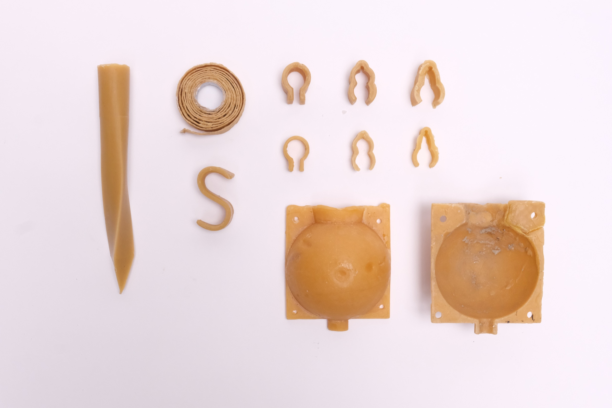
A.P.E.
Il progetto A.P.E. (agricoltura protetta ecologicamente) consiste nell’ andare a sostituire grazie alla
cera d’api tutto ciò che viene usato in plastica o di altri materiali tossici all’ interno del nostro giardino o orto.
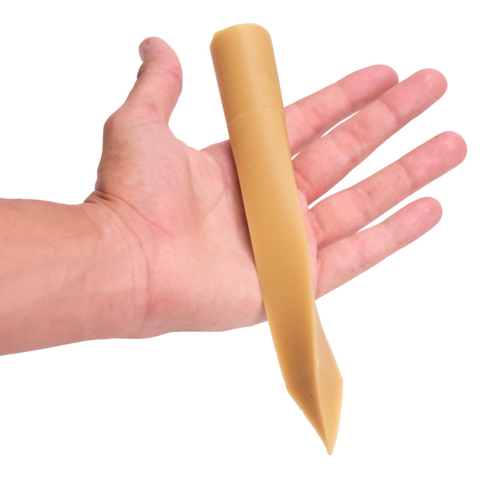
Mi chiamo Jacopo Del Bianco ho 22 anni e frequento il secondo anno di Design all'Unirsm.
Mi muovo tra product design,
comunicazione visiva e sperimentazione di materiali, con una preferenza per quelli naturali e di recupero.
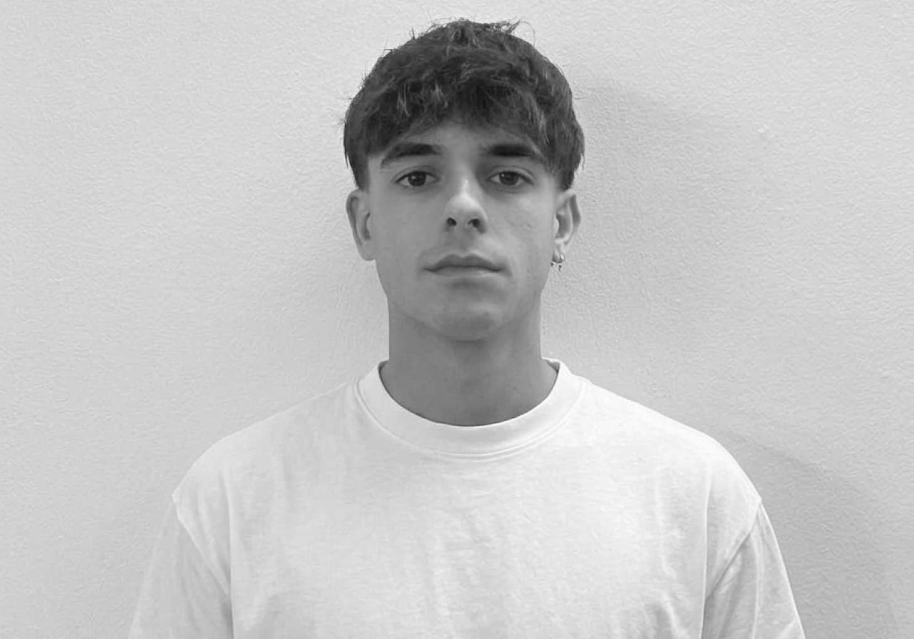
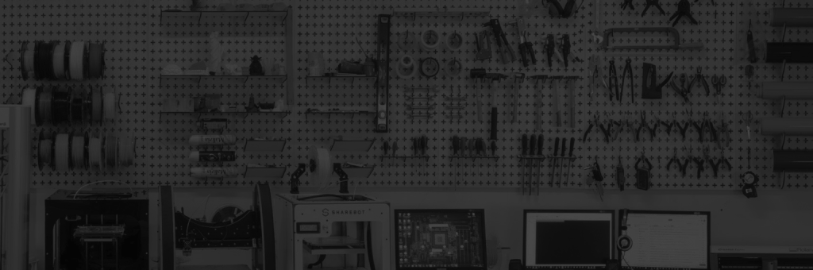
Nel 2023 mi sono diplomato come manutentore meccanico all'istituto professionale.
Poi ho lavorato come magazziniere in un'azienda di materiali per la saldatura. Lì è nata la mia curiosità per i materiali e le tecniche di lavorazione, mentre nel tempo libero cresceva la passione
per la grafica e l'arte.
Nel 2025 ho deciso di unire le due cose iscrivendomi a Design all'università della Repubblica di San Marino.
Oggi affino tecniche e conoscenze e sviluppo
i miei primi progetti, portando con me lo sguardo pratico di chi i materiali li ha prima
maneggiati e studiati.
Progetti tra prodotto e comunicazione visiva. Oggetti, manifesti e brand nati dalla curiosità per i materiali e dalla voglia di raccontare il quotidiano in modo diverso.
> contatti
Il progetto A.P.E. (agricoltura protetta ecologicamente) consiste nell’ andare a sostituire grazie alla
cera d’api tutto ciò che viene usato in plastica o di altri materiali tossici all’ interno del nostro giardino o orto.
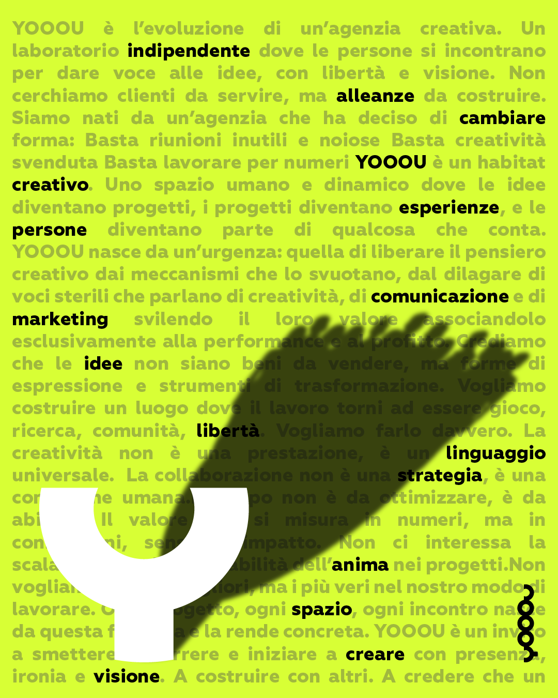
Per YOOOU, agenzia di comunicazione di Marotta, ho realizzato una serie di manifesti dedicati ai valori del brand.
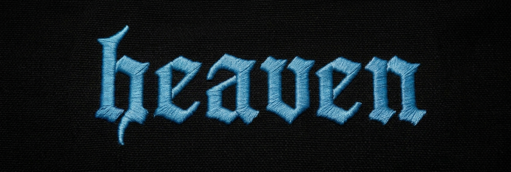
Nel 2022, insieme a un amico, ho lanciato un brand di streetwear indipendente,io mi occupavo dell'identità visiva, mentre lui gestiva la produzione e le vendite.
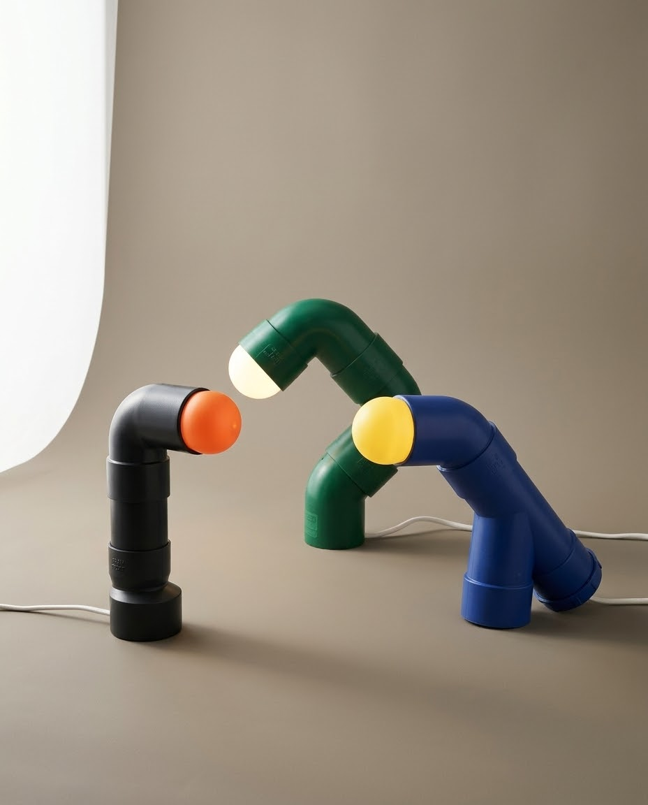
Giratubo è una lampada che unisce il rigore delle forme industriali all'universo giocoso e colorato dei bambini.
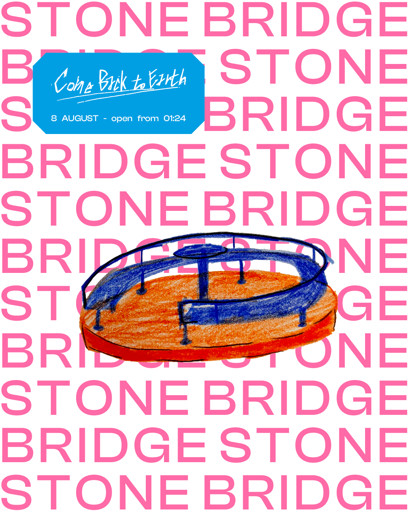
Come Back to Earth è un progetto personale nato dal desiderio di riscoprire ciò che vivo ogni giorno senza accorgermene.
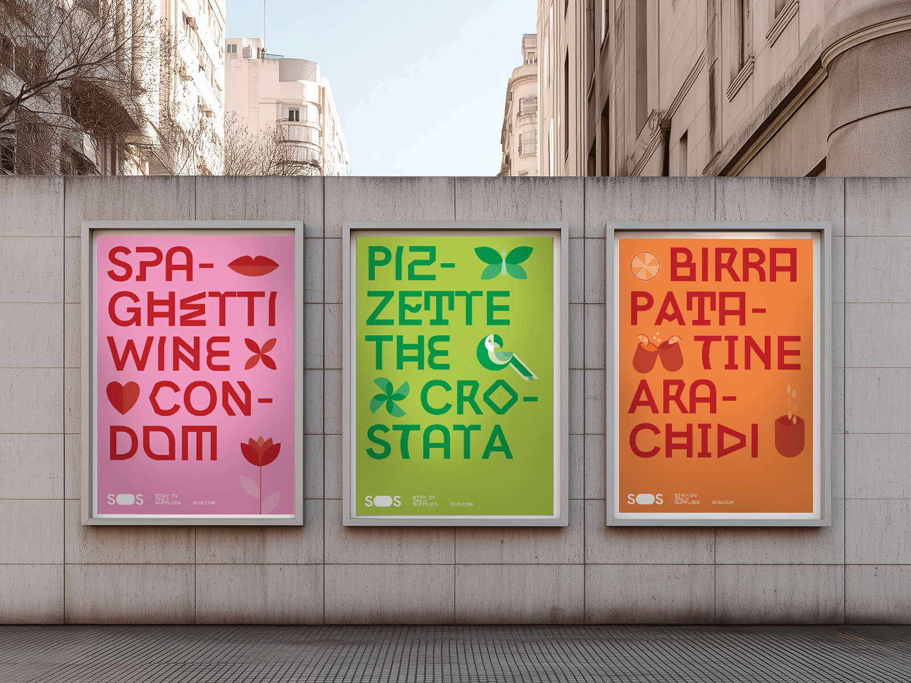
SOS è un brand che propone kit esperienziali già pronti, pensati per offrire tutto il necessario per una serata completa senza alcuna organizzazione.
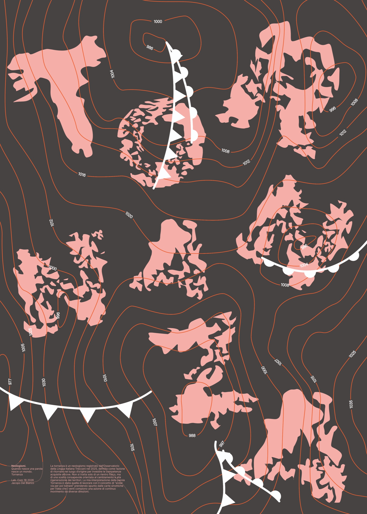
Il progetto nasce dalla richiesta di realizzare un manifesto a partire da un neologismo italiano recente.
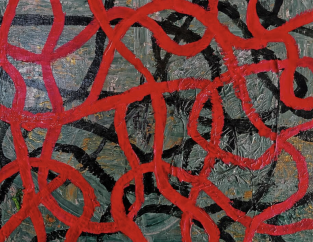
Mi appassiona la ricerca di materiali sostenibili, capire da dove vengono e come possono avere una seconda vita.
Sul lato grafico, amo disegnare e illustrare.
Il disegno a mano è spesso il primo passo dei miei progetti, sia quando penso a un oggetto sia quando costruisco un'immagine.
Sono attratto dall'arte, soprattutto da quella contemporanea.
Mi piace leggere, scoprire nuovi artisti e andare per mostre alla ricerca di nomi che ancora
non conosco.
Tra i miei punti di riferimento ci sono Jean-Michel Basquiat, Mark Rothko e Maurizio Cattelan.
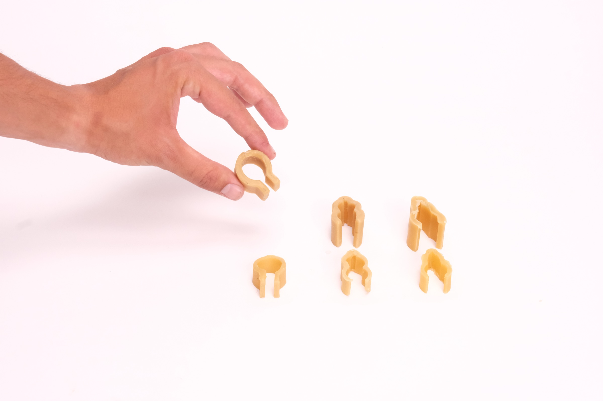
Per nuove collaborazioni e nuovi progetti da costruire, scrivimi su…